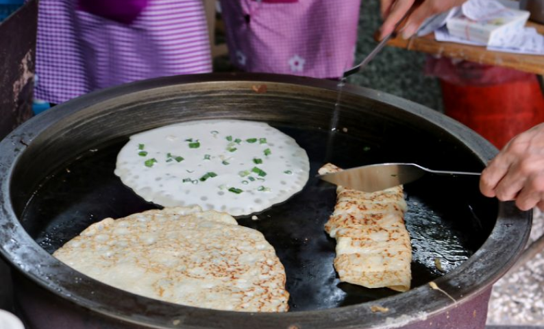
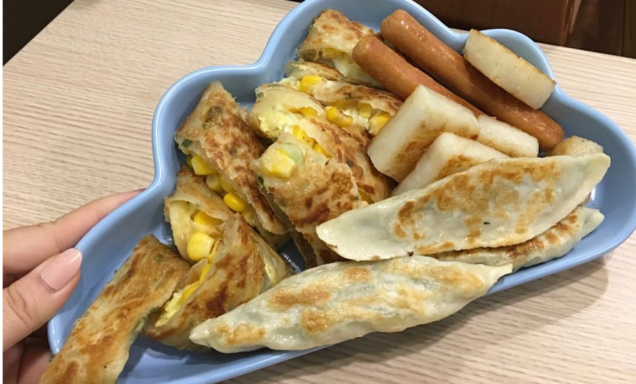
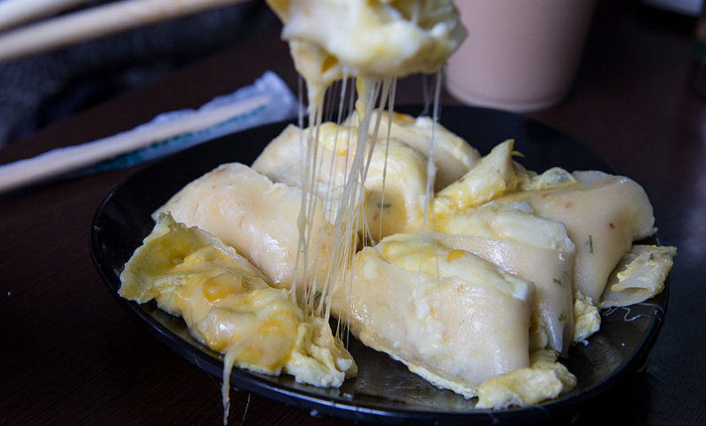
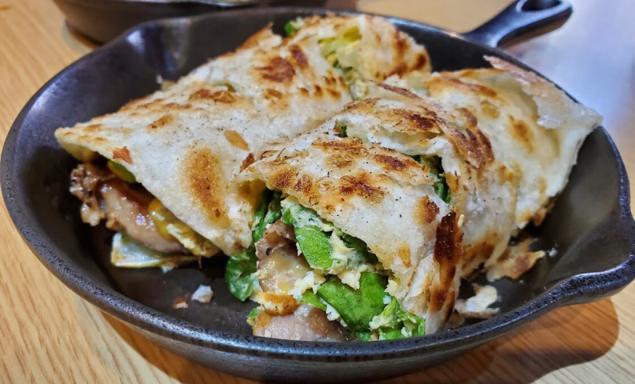

早餐專區

阿公阿婆的粉漿蛋餅可是遠近馳名，成大的學生一定聽過的啦！
座落在店裡各個角落的黑色圓型煎台，站在一旁的店員幾乎沒在停止手邊的動作
現點現煎一個接著一個，按照點菜單的號碼叫號
身圍觀光客一定要避開成大學生上課時間-整點前後10分鐘不要來
不然等到餓死才能吃到XD
粉漿蛋餅的特色是雖然表皮煎到焦焦脆脆，一入口還是很Q彈軟嫩
淋上阿公阿婆特製醬油膏+甜辣醬，更是一絕~
另外，如果室內用的話，不妨點一碗熱的豆米漿，超大的份量可以讓你吃的飽飽飽
大份跟小份的差別只有大份的再多一顆蛋而已，所以大部分的人都點小份呦~
座落在店裡各個角落的黑色圓型煎台，站在一旁的店員幾乎沒在停止手邊的動作
現點現煎一個接著一個，按照點菜單的號碼叫號
身圍觀光客一定要避開成大學生上課時間-整點前後10分鐘不要來
不然等到餓死才能吃到XD
粉漿蛋餅的特色是雖然表皮煎到焦焦脆脆，一入口還是很Q彈軟嫩
淋上阿公阿婆特製醬油膏+甜辣醬，更是一絕~
另外，如果室內用的話，不妨點一碗熱的豆米漿，超大的份量可以讓你吃的飽飽飽
大份跟小份的差別只有大份的再多一顆蛋而已，所以大部分的人都點小份呦~
阿公阿婆蛋餅
營業時間：05:30-12:30公 休 日：週一
電 話：(06)274-7580
地 址：701台南市東區小東路198巷10號

👉騎樓下招牌套餐$95
套餐裡面包含：煎餃、蘿蔔糕、抓餅、熱狗，四種早餐一次滿足！
小孩先生的蛋餅有一般餅皮跟酥皮的，波波特愛酥皮的脆脆恰恰
醬料也有很多種選擇：番茄醬、蜂蜜芥末醬、泰式酸辣醬、醬油膏....
波波趕上課前也很常點九層塔酥皮蛋餅+泰式酸辣醬，
他的九層塔是直接塞好塞滿那種，吃完感覺整天都會很認真聽課（？
.
如果要外帶可以提前打電話訂，
內用位置也不多，小缺點是有冷氣的內用座位衣服很容易沾染煎台的鍋氣，介意的人建議選騎樓的開放座位比較通風哦~
套餐裡面包含：煎餃、蘿蔔糕、抓餅、熱狗，四種早餐一次滿足！
小孩先生的蛋餅有一般餅皮跟酥皮的，波波特愛酥皮的脆脆恰恰
醬料也有很多種選擇：番茄醬、蜂蜜芥末醬、泰式酸辣醬、醬油膏....
波波趕上課前也很常點九層塔酥皮蛋餅+泰式酸辣醬，
他的九層塔是直接塞好塞滿那種，吃完感覺整天都會很認真聽課（？
.
如果要外帶可以提前打電話訂，
內用位置也不多，小缺點是有冷氣的內用座位衣服很容易沾染煎台的鍋氣，介意的人建議選騎樓的開放座位比較通風哦~
小孩先生
營業時間：06:00-12:30公 休 日：週日
電 話：(06)208-0943
地 址：701台南市東區勝利路81號

雖然店名叫吐司吐司，但大家來這裡一定會點蛋餅啦！
其中又以薯泥起司$60最具代表~
爆滿的薯泥+牽絲的起司，從早餐開始給你滿滿元氣！
波波建議跟朋友點不同口味分著吃才不會膩，畢竟它的分量太多了...
還有一款皮蛋辣菜脯蛋餅$60，也因為口味特別所以也是夯品，
波波覺得皮蛋跟菜脯看似不搭嘎的兩者，和在一起卻意外和諧，
敢吃皮蛋的你，一定要來試試看！
.
店就開在家齊女中旁邊，也要記得避開上學時間來呦~
其中又以薯泥起司$60最具代表~
爆滿的薯泥+牽絲的起司，從早餐開始給你滿滿元氣！
波波建議跟朋友點不同口味分著吃才不會膩，畢竟它的分量太多了...
還有一款皮蛋辣菜脯蛋餅$60，也因為口味特別所以也是夯品，
波波覺得皮蛋跟菜脯看似不搭嘎的兩者，和在一起卻意外和諧，
敢吃皮蛋的你，一定要來試試看！
.
店就開在家齊女中旁邊，也要記得避開上學時間來呦~
吐司吐司
營業時間：06:00-13:00公 休 日：週日
電 話：(06)213-6721
地 址：700台南市中西區健康路一段348號

👉套餐B：舅媽燒肉2.0蛋餅+薯餅+紅茶$123
舅媽燒肉2.0蛋餅（燒肉+九層塔+牽絲起司）單點也只要$68
鐵鍋煎起來的蛋餅非常酥脆，酥到桌上會掉滿屑屑那種~
牽絲起司給的不手軟，想要更多也可以加價再加爆！
.
這家就算開門就進去等，也要等上個半天，
店員只有1~2位，現點現做要花一些時間，
建議趕時間的人真的不要來吃鐵門，
內用吃完的客人也要記得自助回收餐盤呦~
舅媽燒肉2.0蛋餅（燒肉+九層塔+牽絲起司）單點也只要$68
鐵鍋煎起來的蛋餅非常酥脆，酥到桌上會掉滿屑屑那種~
牽絲起司給的不手軟，想要更多也可以加價再加爆！
.
這家就算開門就進去等，也要等上個半天，
店員只有1~2位，現點現做要花一些時間，
建議趕時間的人真的不要來吃鐵門，
內用吃完的客人也要記得自助回收餐盤呦~
鐵門鐵鍋蛋餅
營業時間：07:00-12:00公 休 日：週一
電 話：0908-123-875
地 址：701台南市東區衛國街104號